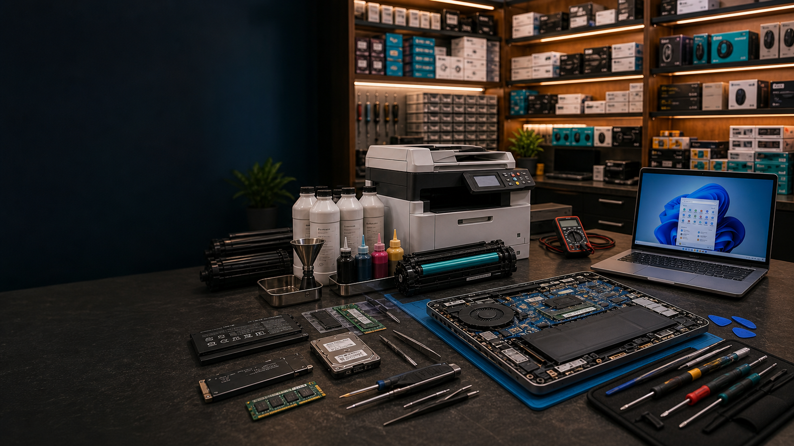
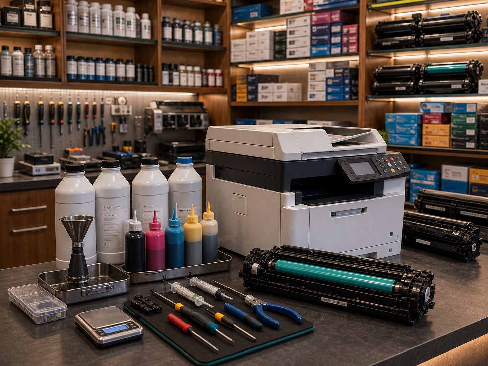
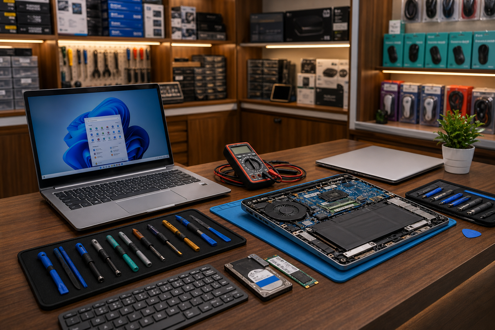

Chenoy Trade Centre, Secunderabad
Trusted IT Solutions & Printer Peripherals Since 1994.
Sree Pooja Technologies is a long-standing CTC service and sales shop managed by Veeresh Nelakanti and Prabhakar Bandaru, serving customers with new laptops, new printers, toner refilling, laptop repairs, software troubleshooting, and verified refurbished laptops.
Printer service, laptop repair, software troubleshooting, new laptops, new printers and verified refurbished laptops from Shop 35, CTC Secunderabad.
Our services
Reliable repair, refilling and troubleshooting work from a CTC service bench.
Built for offices, students, developers, small businesses and walk-in customers who need clear pricing and dependable turnaround.

Printer & Toner Remanufacturing Hub
Sree Pooja Technologies helps offices and walk-in customers extend printer life with precise toner refilling, cartridge remanufacturing, drum and blade replacement, and MFP maintenance.
- Premium Laser Toner Refilling for HP, Canon, Epson and Brother.
- Cartridge drum and blade replacements.
- Bulk Ink Supply and Continuous Ink Supply System setup.
- Corporate Multi-Function Printer annual maintenance.

Advanced Laptop Repair & Diagnostics
The Shop 35 service bench handles laptop diagnostics and component-level repairs with clear pricing before work begins.
- Laptop screen and cracked display panel replacements.
- Keyboard, battery and charging port repairs.
- Internal thermal overhaul with fan replacement and cooling paste servicing.
Software Troubleshooting & Diagnostics
Windows, macOS and Ubuntu software issues are checked with practical diagnostics for driver conflicts, startup errors, app crashes, updates and slow-performance complaints.
Windows
macOS
Ubuntu
- Windows driver conflicts, update errors, app crashes and slow-performance checks.
- Ubuntu and Linux software troubleshooting for common developer and office workflows.
- macOS app, update, storage and performance issue checks for supported MacBooks.
Hardware & sales shop
New laptops, new printers and verified refurbished laptops.
Customers can buy new laptops, printer hardware, curated IT peripherals, and tested tier-1 refurbished laptops from the same trusted shop.
New Laptops, Printers & Peripherals
Trading of new laptops, bulk printers, automated data processing units, and specialized IT peripherals for home, office and business customers.
Major brands stocked: HP, Canon, Dell, Epson.
Ask for new stockVerified Refurbished Laptops
Every pre-owned machine entering the inventory goes through component testing, multi-point diagnostics, software health checks, and battery-cycle evaluation before resale.
Check refurbished laptop inventoryAbout us
Sree Pooja Technologies corporate profile.
Since 1994, Veeresh Nelakanti and Prabhakar Bandaru have built Sree Pooja Technologies around fair billing, practical diagnostics, and reliable service from Shop 35 inside Chenoy Trade Centre.
Veeresh Nelakanti
Managing Partner
Prabhakar Bandaru
Managing Partner
- Managing Partners
- Veeresh Nelakanti, Prabhakar Bandaru
- Year Established
- 1994 (32 Years of Market Trust)
- Legal Status
- Registered Partnership
- Nature of Business
- Wholesaler, Distributor, Retailer & Service Provider
Contact & location
Visit Shop No. 35 on the Ground Floor of Chenoy Trade Centre.
Located right on the Ground Floor, beside the main Park Lane Hotel entrance pathway.
Landline Office Line: +91 40 6638 5749
Store Address: Shop No. 35, Ground Floor, Chenoy Trade Centre (CTC), Park Lane, Secunderabad, Hyderabad, Telangana - 500003.
Store Hours: 10:30 AM to 8:30 PM, Monday through Saturday. Closed on Sundays.
Real map location
Sree Pooja Technologies, Shop No. 35
Ground Floor, Chenoy Trade Centre (CTC), Park Lane, Secunderabad, Hyderabad, Telangana - 500003.
Landmark: beside the main Park Lane Hotel entrance pathway.